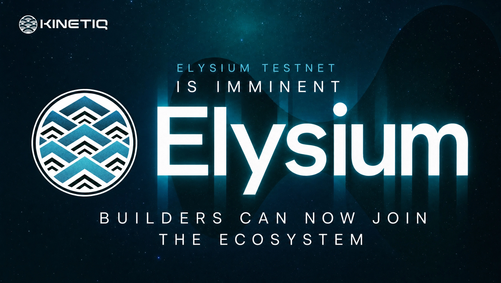

Elysium testnet is imminent: Builders can now join the ecosystem
Elysium’s testnet is approaching. Builders can join the ecosystem, review the technical docs, and prepare for Hyperliquid’s high-performance L2.
Elysium’s testnet is imminent.
Ahead of the next phase, Kinetiq is opening the Elysium Ecosystem Builders chat for teams preparing to build on the network.
The group will give builders a dedicated place to connect, explore integrations, find collaboration opportunities, and share what they are working on.
But Elysium is not only giving builders new infrastructure.
25% of Elysium’s sequencer revenue has been committed to builders whose applications successfully drive usage of the network’s blockspace.
The objective is simple: applications that create meaningful activity for Elysium should participate directly in the economic value they generate.
Key takeaways
- The Elysium testnet is approaching, with network access details to be published separately.
- Builders can now join a dedicated ecosystem group for technical discussion and collaboration.
- Elysium is a high-performance, Hyperliquid-aligned Layer 2 that settles to HyperEVM and uses HYPE as its native gas token.
- The network targets 100 to 200 ms blocks and 300 Mgas/s of execution throughput.
- Twenty-five percent of sequencer revenue is reserved for applications that successfully drive Elysium blockspace usage.
What is Elysium?
Elysium is Kinetiq’s general-purpose, high-performance DeFi EVM built for the Hyperliquid ecosystem.
The network uses Arbitrum Orbit, Nitro, and ArbOS, operated with Conduit. It settles to HyperEVM, is co-located with HyperCore, and uses HYPE as its native gas token. HYPE moves between HyperEVM and Elysium on a 1:1 basis, with no wrapper or additional network token required.
Elysium is designed for workloads that require more throughput and lower latency than HyperEVM was built to provide. Its current specifications target real 100 to 200 ms blocks and 300 Mgas/s of execution throughput, while preserving standard EVM semantics and tooling.
That means Solidity and Vyper contracts can run without modification, while familiar tools such as Foundry, Hardhat, viem, ethers, and standard JSON-RPC remain available to developers.
What can builders create?
Elysium is a general-purpose EVM, but its architecture is particularly suited to financial applications that depend on speed, liquidity, and access to Hyperliquid markets.
That includes:
- Spot AMMs and PropAMMs
- Automated trading and market-making systems
- Token launch and liquidity infrastructure
- Lending, derivatives, and structured products
- Applications built around HyperCore market data
- General-purpose DeFi applications
At launch, builders will be able to use standard EVM infrastructure and bridge tokens between Elysium and HyperEVM. HyperEVM ERC-20 tokens can be bridged permissionlessly, while Elysium-native tokens can use the mirror bridge to reach HyperEVM and eventually HyperCore spot markets.
A planned phase-two upgrade will deepen that integration further.
Elysium contracts will be able to read HyperCore order books, prices, balances, positions, depth, and expected slippage directly from the execution environment. Applications will also be able to send trading intents to users’ own HyperCore accounts through revocable, trade-only API agents.
The result is a new application surface: programmable EVM execution operating directly alongside HyperCore’s liquidity and market structure.
Builders participate in network growth
Most builder programs rely on temporary grants or discretionary incentives.
Elysium introduces a recurring economic allocation tied to the activity generated on the network.
25% of sequencer revenue is reserved for builders whose applications successfully consume and drive Elysium blockspace. These resources can support mechanisms such as user incentives, liquidity programs, fee rebates, and other application-level growth strategies.
The model is intended to align three participants:
- Builders create applications.
- Applications attract users and blockspace demand.
- The resulting network activity generates resources that can flow back into the ecosystem.
This opens a broader design space for applications, incentive systems, and market structures that would be difficult to sustain through one-off grants alone.
Join the Elysium builder ecosystem
The Elysium Ecosystem Builders chat is now open to teams exploring the network.
Builders can use the group to:
- Connect with other teams building on Elysium
- Discuss integrations and infrastructure requirements
- Explore collaboration opportunities
- Share products, prototypes, and ideas
- Prepare for the upcoming testnet
The full Elysium technical overview is also available for teams evaluating the network architecture.
It covers the execution stack, block targets, HYPE gas, HyperEVM settlement, AnyTrust data availability, token bridging, HyperCore composability, developer tooling, and the planned read and write integration.
The document remains a pre-launch technical overview, so individual specifications and timelines may still be refined before mainnet. Public RPC endpoints, the chain ID, block explorer, faucet, and final testnet connection details will be published with the network rollout.
The bottom line
The Elysium testnet marks the transition from architecture to applications.
Elysium gives developers a standard EVM environment with substantially higher performance, HYPE as native gas, direct alignment with Hyperliquid, and a roadmap toward native HyperCore read and write access.
It also gives successful applications a direct stake in the network activity they create.
The infrastructure is approaching.
Now it is time to see what builders do with it.